Cross-Site ScriptingUnderstanding Script Context and Syntax
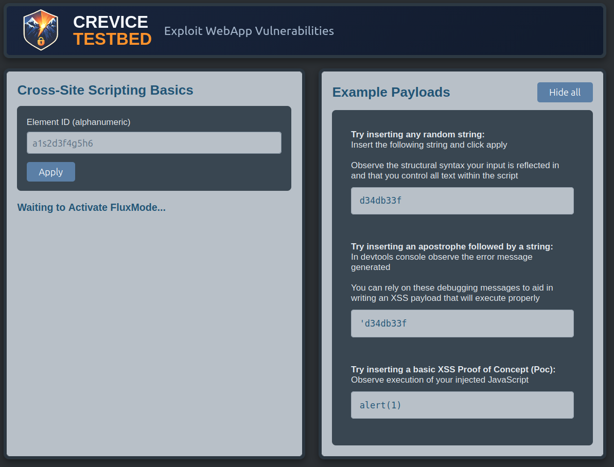
Summary
The Cross-Site Scripting Basics, Basics Too, and Basics Thrice Crevice Testbed labs introduce XSS by showing how injected input behaves inside JavaScript
<script> tags under three different conditions. They progress from a simple injection
scenario with no surrounding code to more realistic cases where existing JavaScript requires
the payload to match a specific syntax and where the injection point is within a JavaScript comment requiring breaking into a new line for code execution.
The goal isn’t just to find reflection and say “this looks bad.” It’s to understand the execution context well enough to turn a weak or broken proof of concept into a reliable demonstration of exploitability that makes remediation hard to argue against and encourages the development team to prioritize it.
Lab Objectives
- Observe how user input is reflected inside
<script>tags - Use browser developer tools to identify JavaScript errors
- Understand how JavaScript syntax affects payload execution
- Modify payloads to match the expected execution context
- See how comments, strings, and line breaks can change exploitability
Part 1: Direct Script Injection
In XSS Basics, user input is inserted directly into a <script>
element without any surrounding JavaScript.
When testing for reflections, a tester will often insert an easily identifiable string into application functionality that
accepts user input then observe how those strings are handled in the user interface as well as in their
browser developement tools. When d34db33f is injected it causes a syntax error in the development console
because it is being inserted directly into an HTML <script> element in a code context.
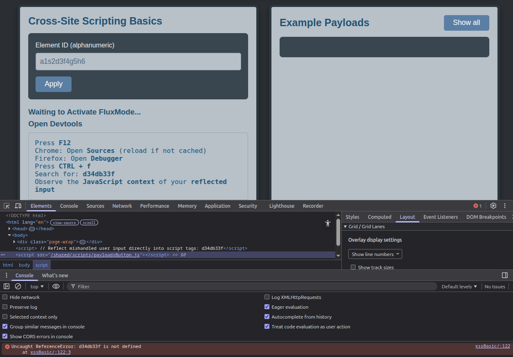
Observe that injecting 'd34db33f results a different syntax error in the development console. These
error messages provide syntax clues helpful for debugging during XSS testing within HTML script elements. Understand them. They should be
a part of your daily routine.
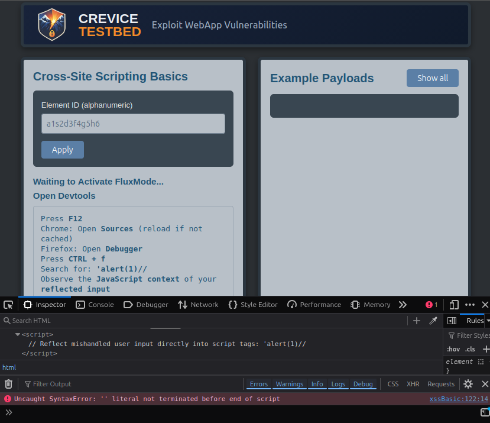
A basic payload such as:
alert(1)
executes immediately because it is interpreted as valid JavaScript.
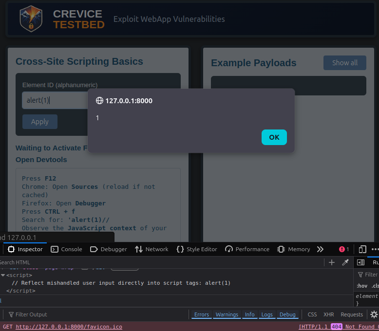
This demonstrates the simplest form of XSS, where injected input becomes executable code with no additional constraints.
Part 2: Injection Inside Existing JavaScript
In XSS Basics Too, user input is still reflected inside a <script>
tag, but now it's embedded within existing JavaScript code in a string context.
Submitting d34db33f results in no error message in the developer console and is reflected in a string context within single quotes inside the <script>
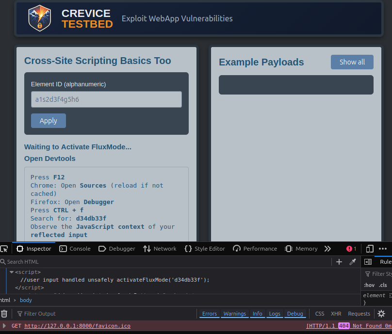
Submitting 'alert(1)// results in a syntax error, but the error is different than we saw in the previous lab. Observe
that the developer console notes that a parenthesis is missing after argument list.
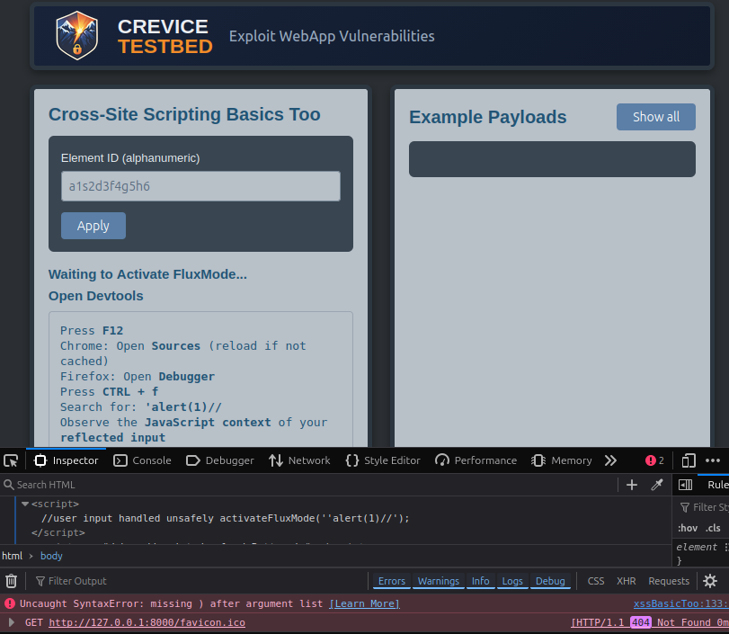
Inspecting the script in developer tools shows how the input is embedded within existing code. We have terminated the string context our injection had previously been reflected in and our injection is now being parsed as Javascript.
The payload must be modified to match the expected syntax. Consider the original syntax of activateFluxMode('UserInput'); and what
our injection of 'alert(1)// has changed. UserInput is expected to be handled as a string, but we have inserted a single quote which closed the
expected user input bit of the code. Ignore the alert(1) and focus on the single quote and // characters. Imagine
that the code looks like this now activateFluxMode(''//');. The single quote has allowed our input to be interpreted as JavaScript code, which
means that the // characters are causing everything after them to be interpreted as comments.
In coding, symmetry is a fundamental principle for readability, structure, and debugging. It usually requires paired symbols
to be opened and closed correctly. Violating this symmetry, such as missing a parenthesis, curly brace, or closing quote is a primary cause of syntax errors. With
all this in mind, consider what you are removing from the existing code by including comment characters. To the interpreter, your code now looks like
activateFluxMode(''// which removes symmetry from the existing code. Our syntax error says that the code is missing a parenthesis. If you
can see where it is needed, move ahead. If not, take another look.
Since we don't control the code before our injection point, we have to satisfy the created syntax of the code that exists before the point we are injecting into. The original code had a single quote, a parenthesis, and a semicolon after the user input because there was an opening quote and semicolon before the user input. We must put those back in order to satisfy the syntax of the existing code and execute our injected code.
Try ');alert(1)//
This closes the existing string, executes the payload, and comments out the remaining code to prevent syntax errors.
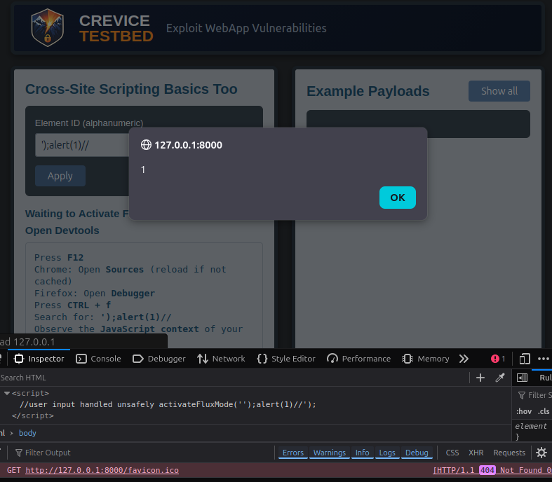
With the syntax corrected, the injected JavaScript executes successfully.
Part 3: Injection Inside a JavaScript Comment
XSS Basics Thrice builds on the earlier labs, but user-controllable data is reflected inside a JavaScript comment, causing the JavaScript interpreter to ignore user input unless the attacker first breaks out of the commented line.
A subtle but important difference from the previous labs is that this one uses a URL parameter for injection, which will aid in exploitation.
Submitting d34db33f shows that the value is reflected and there are no errors
in the developer console. The same is true for 'd34db33f and
alert(1).
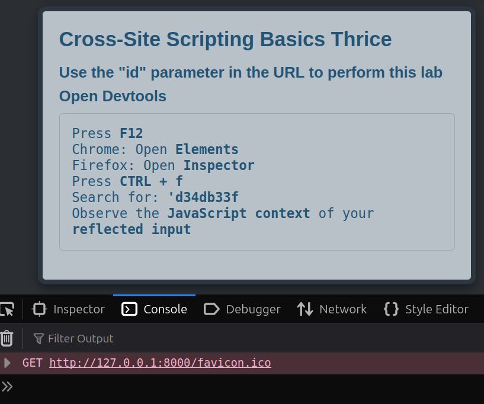
None of the payloads execute because they remain inside the comment and are treated as comment text rather than code by the interpreter.

The constraints imposed by the comment syntax have to be escaped.
%0A is a URL-encoded newline. This can change the structure of the script by
ending the current commented line and moving the injected content into the next line. After inserting
%0Aalert(1), a console error should be produced in developer tools rather
than execution. This is an important clue: the payload is no longer safely trapped inside the comment and is
being interpreted, but the resulting script still isn’t valid.
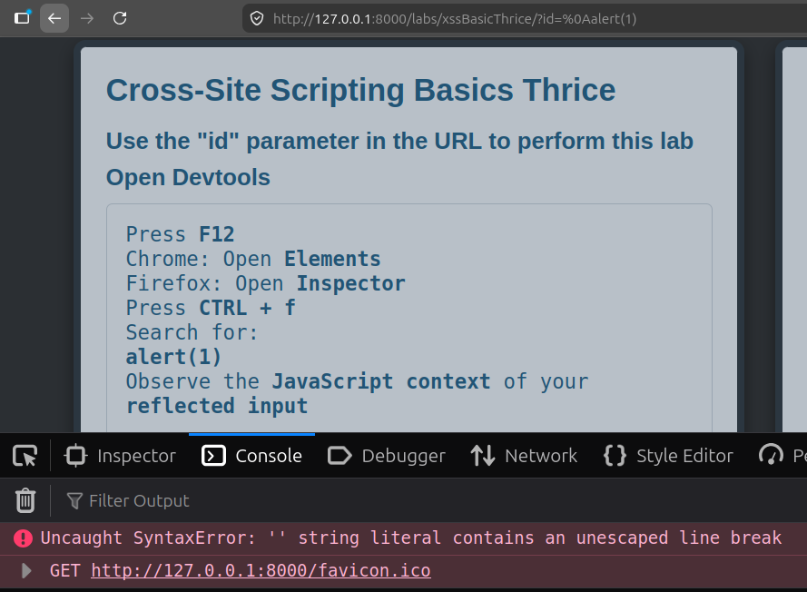
Finally, submitting %0Aalert(1)// leads to
code execution. The newline ends the original comment, alert(1) executes on
the next line as live JavaScript, and the trailing
// comments out whatever follows so the rest
of the script doesn’t cause a syntax problem.
We’ve escaped the JavaScript comment by injecting a newline, then commented out the remainder of the line to preserve valid syntax.
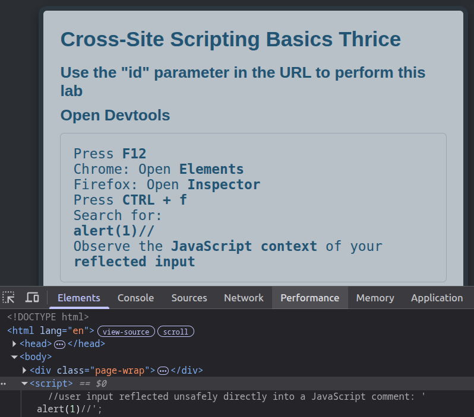
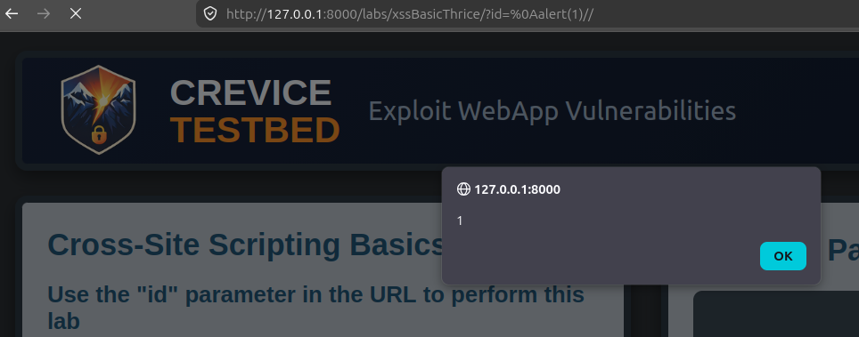
Reflection alone doesn’t tell you enough. The problem changes depending on the context you inject into, so you have to understand the parser state at the injection point. Here, the problem is escaping a JavaScript comment by injecting a line break and then preventing the remaining script from breaking execution.
Using Developer Tools
This lab is designed to reinforce the use of browser developer tools during testing.
- Use the Console tab to identify syntax errors
- Use the Elements or Sources tab to inspect how input is rendered
- Observe how small payload changes affect execution
- Compare whether input lands in raw script, a string, or a comment
Understanding how the browser interprets injected input is key to successfully exploiting client-side vulnerabilities.
Key Takeaways
- Not all reflected input executes as JavaScript
- Execution depends on the surrounding context and syntax
- Input reflected in raw script, strings, and comments each requires a different approach
- Syntax errors often provide clues for crafting a working payload
- Developer tools are essential for analyzing and debugging XSS
Common Pitfall
One performing security testing or web application penetration testing who doesn’t know how to interpret browser error messages will often assume that a non-executing payload means the application is not vulnerable.
That's risky.
As XSS gets more complex, especially in DOM-based cases, that assumption becomes even more serious.
This lab demonstrates that adjusting the payload to fit the surrounding JavaScript can turn a non-working test into a successful exploit.